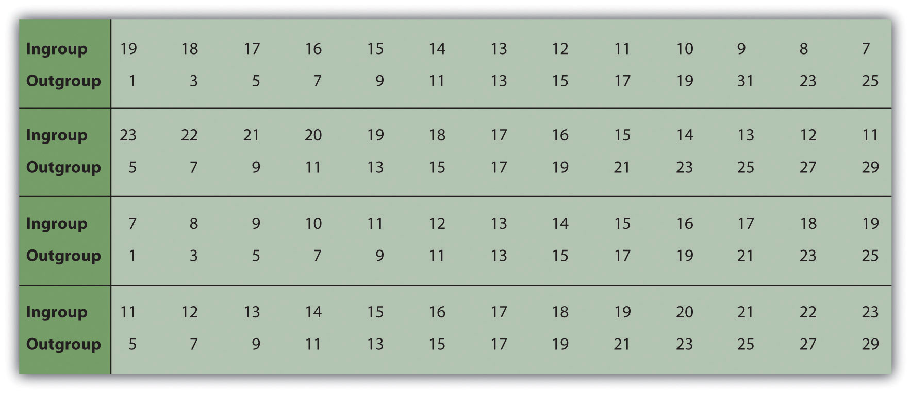

We have now seen that social categorization occurs whenever we think about others in terms of their category memberships rather than on the basis of other, more personal information about the individual. And we have seen that social categorization can have a variety of negative consequences for the people who are the targets of our stereotypes. But social categorization becomes even more important, and has even more powerful effects upon our reactions to others, when the categorization becomes more emotionally involving, and particularly when the categorization involves categorization into liked ingroups and potentially disliked outgroups (Amodio & Devine, 2006).Amodio, D. M., & Devine, P. G. (2006). Stereotyping and evaluation in implicit race bias: Evidence for independent constructs and unique effects on behavior. Journal of Personality and Social Psychology, 91, 652–661.
Because our ancestors lived in small social groups that were frequently in conflict with other groups, it was evolutionarily functional for them to view members of other groups as different and potentially dangerous (Brewer & Caporael, 2006; Navarrete, Kurzban, Fessler, & Kirkpatrick, 2004).Brewer, M. B., & Caporael, L. R. (2006). An evolutionary perspective on social identity: Revisiting groups. In M. Schaller, J. A. Simpson, & D. T. Kenrick (Eds.), Evolution and social psychology (pp. 143–161). New York, NY: Psychology Press; Navarrete, C. D., Kurzban, R., Fessler, D. M. T., & Kirkpatrick, L. A. (2004). Anxiety and intergroup bias: Terror management or coalitional psychology? Group Processes & Intergroup Relations, 7(4), 370–397. Differentiating between “us” and “them” probably helped keep us safe and free from disease, and as a result, the human brain became very efficient in making these distinctions (Mahajan et al., 2011; Phelps et al., 2000; Van Vugt & Schaller, 2008; Zaraté, Stoever, MacLin, & Arms-Chavez, 2008).Mahajan, N., Martinez, M. A., Gutierrez, N. L., Diesendruck, G., Banaji, M. R., & Santos, L. R. (2011). The evolution of intergroup bias: Perceptions and attitudes in rhesus macaques. Journal of Personality and Social Psychology, 100(3), 387–405. doi: 10.1037/a0022459; Phelps, E. A., O’Connor, K. J., Cunningham, W. A., Funayama, E. S., Gatenby, J. C., Gore, J. C.…Banaji, M. R. (2000). Performance on indirect measures of race evaluation predicts amygdala activation. Journal of Cognitive Neuroscience, 12(5), 729–738; Van Vugt, M., & Schaller, M. (2008). Evolutionary approaches to group dynamics: An introduction. Group Dynamics: Theory, Research, and Practice, 12(1), 1–6; Zaraté, M. A., Stoever, C. J., MacLin, M. K., & Arms-Chavez, C. J. (2008). Neurocognitive underpinnings of face perception: Further evidence of distinct person and group perception processes. Journal of Personality and Social Psychology, 94(1), 108–115. The problem is that these naturally occurring tendencies may lead us to prefer people who are like us, and in some cases even to unfairly reject people from outgroups.
In his important research on group perceptions, Henri Tajfel and his colleagues (Tajfel, Billig, Bundy, & Flament, 1971)Tajfel, H., Billig, M., Bundy, R., & Flament, C. (1971). Social categorization and intergroup behavior. European Journal of Social Psychology, 1, 149–178. demonstrated how incredibly powerful the role of self-concern is in group perceptions. He found that just dividing people into arbitrary groups produces ingroup favoritismThe tendency to respond more positively to our ingroups than we do to outgroups.—the tendency to respond more positively to people from our ingroups than we do to people from outgroups.
In Tajfel’s research, small groups of high school students came to his laboratory for a study supposedly concerning “artistic tastes.” The students were first shown a series of paintings by two contemporary artists, Paul Klee and Wassily Kandinsky. Supposedly on the basis of their preferences for each painting, the students were divided into two groups (they were called the X group and the Y group). Each boy was told which group he had been assigned to and that different boys were assigned to different groups. But none of them were told the group memberships of any of the other boys.
The boys were then given a chance to allocate points to other boys in their own group and to boys in the other group (but never to themselves) using a series of payoff matrices, such as those shown in Figure 12.7 "Examples of Matrices Used in the Minimal Intergroup Studies of Tajfel and His Colleagues". The charts divided a given number of rewards between two boys, and the boys thought that the rewards would be used to determine how much each boy would be paid for his participation. In some cases, the division was between two boys in the boy’s own group (the ingroup); in other cases, the division was between two boys who had been assigned to the other group (the outgroup); and in still other cases, the division was between a boy in the ingroup and a boy in the outgroup. Tajfel then examined the goals that the boys used when they divided up the points.
Figure 12.7 Examples of Matrices Used in the Minimal Intergroup Studies of Tajfel and His Colleagues
From Tajfel (1970).Tajfel, H. (1970). Experiments in intergroup discrimination. Scientific American, 223, 96–102.
A comparison of the boys’ choices in the different matrices showed that they allocated points between two boys in the ingroup or between two boys in the outgroup in an essentially fair way, so that each boy got the same amount. However, fairness was not the predominant approach when dividing points between ingroup and outgroup. In this case, rather than exhibiting fairness, the boys displayed ingroup favoritism, such that they gave more points to other members of their own group in relationship to boys in the other group. For instance, the boys might assign 8 points to the ingroup boy and only 3 points to the outgroup boy, even though the matrix also contained a choice in which they could give the ingroup and the outgroup boys 13 points each. In short, the boys preferred to maximize the gains of the other boys in their own group in comparison with the boys in the outgroup, even if doing so meant giving their own group members fewer points than they could otherwise have received.
Perhaps the most striking part of Tajfel’s results is that ingroup favoritism was found to occur on the basis of such arbitrary and unimportant groupings. In fact, ingroup favoritism occurs even when the assignment to groups is on such trivial things as whether people “overestimate” or “underestimate” the number of dots shown on a display, or on the basis of a completely random coin toss (Billig & Tajfel, 1973; Locksley, Ortiz, & Hepburn, 1980).Billig, M., & Tajfel, H. (1973). Social categorization and similarity in intergroup behavior. European Journal of Social Psychology, 3, 27–52; Locksley, A., Ortiz, V., & Hepburn, C. (1980). Social categorization and discriminatory behavior: Extinguishing the minimal intergroup discrimination effect. Journal of Personality and Social Psychology, 39(5), 773–783. doi: 10.1037/0022–3514.39.5.773 Tajfel’s research, as well other research demonstrating ingroup favoritism, provides a powerful demonstration of a very important social psychological process: Groups exist simply because individuals perceive those groups as existing. Even in a case where there really is no group (at least no meaningful group in any real sense), we still perceive groups and still demonstrate ingroup favoritism.
The tendency to favor their ingroup develops quickly in young children, beginning at the age of 3 years and increasing up to about 6 years of age, and almost immediately begins to influence their behavior (Aboud, 2003; Aboud & Amato, 2001).Aboud, F. E. (2003). The formation of in-group favoritism and out-group prejudice in young children: Are they distinct attitudes? Developmental Psychology, 39(1), 48–60; Aboud, F. E., & Amato, M. (2001). Developmental and socialization influences on intergroup bias. In R. Brown & S. Gaertner (Eds.), Blackwell handbook in social psychology (Vol. 4, pp. 65–85). New York, NY: Blackwell. Young children show greater liking for peers of their own sex and race and typically play with same-sex others after the age of 3. And there is a norm that we should favor our ingroups: People like people who express ingroup favoritism better than those who are more egalitarian (Castelli & Carraro, 2010).Castelli, L., & Carraro, L. (2010). Striving for difference: On the spontaneous preference for ingroup members who maximize ingroup positive distinctiveness. European Journal of Social Psychology, 40(6), 881–890. doi: 10.1002/ejsp.740 Ingroup favoritism is found for many different types of social groups, in many different settings, on many different dimensions, and in many different cultures (Bennett et al., 2004; Pinter & Greenwald, 2011).Bennett, M., Barrett, M., Karakozov, R., Kipiani, G., Lyons, E., Pavlenko, V.…Riazanova., T. (2004). Young children’s evaluations of the ingroup and of outgroups: A multi-national study. Social Development, 13(1), 124–141. doi: 10.1046/j.1467–9507.2004.00260.x; Pinter, B., & Greenwald, A. G. (2011). A comparison of minimal group induction procedures. Group Processes and Intergroup Relations, 14(1), 81–98. doi: 10.1177/1368430210375251 Ingroup favoritism also occurs on trait ratings, such that ingroup members are rated as having more positive characteristics than are outgroup members (Hewstone, 1990).Hewstone, M. (1990). The “ultimate attribution error”? A review of the literature on intergroup causal attribution. European Journal of Social Psychology, 20(4), 311–335. People also take credit for the successes of other ingroup members, remember more positive than negative information about ingroups, are more critical of the performance of outgroup than of ingroup members, and believe that their own groups are less prejudiced than are outgroups (Shelton & Richeson, 2005).Shelton, J. N., & Richeson, J. A. (2005). Intergroup contact and pluralistic ignorance. Journal of Personality and Social Psychology, 88(1), 91–107.
People also talk differently about their ingroups than their outgroups, such that they describe the ingroup and its members as having broad positive traits (“We are generous and friendly”) but describe negative ingroup behaviors in terms of the specific behaviors of single group members (“Our group member, Bill, hit someone”) (Maass & Arcuri, 1996; Maass, Ceccarielli, & Rudin, 1996; von Hippel, Sekaquaptewa, & Vargas, 1997).Maass, A., & Arcuri, L. (1996). Language and stereotyping. In C. N. Macrae, C. Stangor, & M. Hewstone (Eds.), Stereotypes and stereotyping (pp. 193–226). New York, NY: Guilford Press; Maass, A., Ceccarielli, R., & Rudin, S. (1996). Linguistic intergroup bias: Evidence for in-group-protective motivation. Journal of Personality and Social Psychology, 71(3), 512–526; von Hippel, W., Sekaquaptewa, D., & Vargas, P. (1997). The linguistic intergroup bias as an implicit indicator of prejudice. Journal of Experimental Social Psychology, 33(5), 490–509. These actions allow us to spread positive characteristics to all members of our ingroup but reserve negative aspects for individual group members, thereby protecting the group’s image.
People also make trait attributions in ways that benefit their ingroups, just as they make trait attributions that benefit themselves. This general tendency, known as the ultimate attribution errorThe tendency for competing groups to make causal attributions that maintain ingroup favoritism., results in the tendency for each of the competing groups to perceive the other group extremely and unrealistically negatively (Hewstone, 1990).Hewstone, M. (1990). The “ultimate attribution error”? A review of the literature on intergroup causal attribution. European Journal of Social Psychology, 20(4), 311–335. When an ingroup member engages in a positive behavior, we tend to see it as a stable internal characteristic of the group as a whole. Similarly, negative behaviors on the part of the outgroup are seen as caused by stable negative group characteristics. On the other hand, negative behaviors from the ingroup and positive behaviors from the outgroup are more likely to be seen as caused by temporary situational variables or by behaviors of specific individuals and are less likely to be attributed to the group.
Ingroup favoritism has a number of causes. For one, it is a natural part of social categorization—we categorize into ingroups and outgroups because it helps us simplify and structure our environment. It is easy, and perhaps even natural, to believe in the simple idea that “we are better than they are.” People who report that they have strong needs for simplifying their environments also show more ingroup favoritism (Stangor & Leary, 2006).Stangor, C., & Leary, S. (2006). Intergroup beliefs: Investigations from the social side. Advances in Experimental Social Psychology, 38, 243–283.
Ingroup favoritism also occurs at least in part because we belong to the ingroup and not the outgroup (Cadinu & Rothbart, 1996).Cadinu, M. R., & Rothbart, M. (1996). Self-anchoring and differentiation processes in the minimal group setting. Journal of Personality and Social Psychology, 70(4), 661–677. We like people who are similar to ourselves, and we perceive other ingroup members as similar to us. This also leads us to favor other members of our ingroup, particularly when we can clearly differentiate them from members of outgroups. We may also prefer ingroups because they are more familiar to us (Zebrowitz, Bronstad, & Lee, 2007).Zebrowitz, L. A., Bronstad, P. M., & Lee, H. K. (2007). The contribution of face familiarity to ingroup favoritism and stereotyping. Social Cognition, 25(2), 306–338. doi: 10.1521/soco.2007.25.2.306
But the most important determinant of ingroup favoritism is simple self-enhancement. We want to feel good about ourselves, and seeing our ingroups positively helps us do so (Brewer, 1979).Brewer, M. B. (1979). In-group bias in the minimal intergroup situation: A cognitive-motivational analysis. Psychological Bulletin, 86, 307–324. Being a member of a group that has positive characteristics provides us with the feelings of social identityThe positive emotions that we experience as a member of an important social group.—the positive self-esteem that we get from our group memberships. When we can identify ourselves as a member of a meaningful social group (even if it is a relatively trivial one), we can feel better about ourselves.
We are particularly likely to show ingroup favoritism when we are threatened or otherwise worried about our self-concept (Maner et al., 2005; Solomon, Greenberg, & Pyszczynski, 2000).Maner, J. K., Kenrick, D. T., Becker, D. V., Robertson, T. E., Hofer, B., Neuberg, S. L., & Schaller, M. (2005). Functional projection: How fundamentally social motives can bias interpersonal perception. Journal of Personality and Social Psychology, 88, 63–75; Solomon, S., Greenberg, J., & Pyszczynski, T. (2000). Pride and prejudice: Fear of death and social behavior. Current Directions in Psychological Science, 9(6), 200–204. And people express higher self-esteem after they have been given the opportunity to derogate outgroups, suggesting that ingroup favoritism does make us feel good (Lemyre & Smith, 1985; Rubin & Hewstone, 1998).Lemyre, L., & Smith, P. M. (1985). Intergroup discrimination and self-esteem in the minimal group paradigm. Journal of Personality and Social Psychology, 49, 660–670; Rubin, M., & Hewstone, M. (1998). Social identity theory’s self-esteem hypothesis: A review and some suggestions for clarification. Personality and Social Psychology Review, 2, 40–62. Furthermore, when individuals feel that the value of their ingroup is being threatened, they respond as if they are trying to regain their own self-worth—by expressing more positive attitudes toward ingroups and more negative attitudes toward outgroups (Branscombe, Wann, Noel, & Coleman, 1993; Spears, Doosje, & Ellemers, 1997).Branscombe, N. R., Wann, D. L., Noel, J. G., & Coleman, J. (1993). In-group or out-group extremity: Importance of the threatened social identity. Personality and Social Psychology Bulletin, 19, 381–388; Spears, R., Doosje, B., & Ellemers, N. (1997). Self-stereotyping in the face of threats to group status and distinctiveness: The role of group identification. Personality and Social Psychology Bulletin, 23, 538–553. Fein and Spencer (1997)Fein, S., & Spencer, S. J. (1997). Prejudice as self-image maintenance: Affirming the self through derogating others. Journal of Personality and Social Psychology, 73, 31–44. found that participants expressed less prejudice after they had been given the opportunity to affirm and make salient an important and positive part of their own self-concept. In short, when our group seems to be good, we feel good; when our group seems to be bad, we feel bad.
In some cases, we may be able to feel good about our group memberships even when our own individual outcomes are not so positive. Schmitt, Silvia, and Branscombe (2000)Schmitt, M. T., Silvia, P. J., & Branscombe, N. R. (2000). The intersection of self-evaluation maintenance and social identity theories: Intragroup judgment in interpersonal and intergroup contexts. Personality and Social Psychology Bulletin, 26(12), 1598–1606. had groups of female college students perform a creativity task and then gave them feedback indicating that although they themselves had performed very poorly, another woman in their group had performed very well. Furthermore, in some experimental conditions, the women were told that the research was comparing the scores of men and women (which was designed to increase categorization by gender). In these conditions, rather than being saddened by the upward comparison with the other woman, participants used the successful performance of the other woman to feel good about themselves, as women.
Although people have a general tendency to show ingroup favoritism, there are least some cases in which it does not occur. One situation in which ingroup favoritism is unlikely is when the members of the ingroup are clearly inferior to other groups on an important dimension. The players on a baseball team that has not won a single game all season are unlikely to be able to feel very good about themselves as a team and are pretty much forced to concede that the outgroups are better, at least as far as playing baseball is concerned. Members of low-status groups show less ingroup favoritism than do members of high-status groups and may even display outgroup favoritism, in which they admit that the other groups are better than they are (Clark & Clark, 1947).Clark, K., & Clark, M. (1947). Racial identification and preference in Negro children. In E. Maccoby, T. Newcomb, & E. Hartley (Eds.), Readings in social psychology (pp. 602–611). New York, NY: Holt, Rinehart & Winston.
Another case in which people judge other members of the ingroup very negatively occurs when a member of one’s own group behaves in a way that threatens the positive image of the ingroup. A student who behaves in a way unbecoming to university students, or a teammate who does not seem to value the importance of the team, is disparaged by the other group members, often more than the same behavior from an outgroup member would be. The strong devaluation of ingroup members who threaten the positive image and identity of the ingroup is known as the black sheep effectStrong negative responses to ingroup members who threaten the positive image and identity of the ingroup..
To this point, we have considered ingroup favoritism as a natural part of everyday life. Because the tendency to favor the ingroup is a normal byproduct of self-concern, most people do, by and large, prefer their ingroups over outgroups. And yet not everyone is equally ingroup-favoring in all situations. There are a number of individual difference measures that predict prejudice, and these differences become particularly likely to show up under circumstances in which the desire to protect the self becomes important (Guimond, Dambrun, Michinov, & Duarte, 2003).Guimond, S., Dambrun, M., Michinov, N., & Duarte, S. (2003). Does social dominance generate prejudice? Integrating individual and contextual determinants of intergroup cognitions. Journal of Personality and Social Psychology, 84(4), 697–721. doi: 10.1037/0022–3514.84.4.697
Some people are more likely than others to show ingroup favoritism because they are particularly likely to rely on their group memberships to create a positive social identity. These differences in group identification can be measured through self-report measures such as the Collective Self-Esteem Scale (Luhtanen & Crocker, 1992).Luhtanen, R., & Crocker, J. (1992). A collective self-esteem scale: Self-evaluation of one’s social identity. Personality and Social Psychology Bulletin, 18, 302–318. The scale assesses the extent to which the individual values his or her memberships in groups in public and private ways, as well as the extent to which he or she gains social identity from those groups. People who score higher on the scale show more ingroup favoritism in comparison with those who score lower on it (Stangor & Thompson, 2002).Stangor, C., & Thompson, E. P. (2002). Needs for cognitive economy and self-enhancement as unique predictors of intergroup attitudes. European Journal of Social Psychology, 32(4), 563–575. doi: 10.1002/ejsp.114 The scale, from Luhtanen and Crocker (1992),Luhtanen, R., & Crocker, J. (1992). A collective self-esteem scale: Self-evaluation of one’s social identity. Personality and Social Psychology Bulletin, 18, 302–318. is shown in Table 12.2 "The Collective Self-Esteem Scale".
Table 12.2 The Collective Self-Esteem Scale
| Membership | I am a worthy member of the social groups I belong to. |
| I feel I don’t have much to offer to the social groups I belong to [R]. | |
| I am a cooperative participant in the social groups I belong to. | |
| I often feel I’m an unclean member of my social group [R]. | |
| Private | I often regret that I belong to some of the social groups I do [R]. |
| In general, I’m glad to be a member of the social groups I belong to. | |
| Overall, I often feel that the social groups of which I am a member are not worthwhile [R]. | |
| I feel good about the social groups I belong to. | |
| Public | Overall, my social groups are considered good by others. |
| Most people consider my social groups, on the average, to be more ineffective than other social groups [R]. | |
| In general, others respect the social groups that I am a member of. | |
| In general, others think that the social groups I am a member of are unworthy [R]. | |
| Identity | Overall, my group memberships have very little to do with how I feel about myself [R]. |
| The social groups I belong to are an important reflection of who I am. | |
| The social groups I belong to are unimportant in my sense of what kind of a person I am [R]. | |
| In general, belonging to social groups is an important part of my self-image. | |
| [R] = Item is reversed before scoring. | |
|---|---|
Another personality dimension that relates to the desires to protect and enhance the self and the ingroup and thus also relates to greater ingroup favoritism, and in some cases prejudice toward outgroups, is the personality dimension of authoritarianism (Adorno, Frenkel-Brunswik, Levinson, & Sanford, 1950; Altemeyer, 1988).Adorno, T. W., Frenkel-Brunswik, E., Levinson, D. J., & Sanford, R. N. (1950). The authoritarian personality. New York, NY: Harper; Altemeyer, B. (1988). Enemies of freedom: Understanding right-wing authoritarianism. San Francisco, CA: Jossey-Bass. AuthoritarianismAn individual difference variable characterized by a tendency to prefer things to be simple rather than complex and to hold traditional values. is a personality dimension that characterizes people who prefer things to be simple rather than complex and who tend to hold traditional and conventional values. Authoritarians are ingroup-favoring in part because they have a need to self-enhance and in part because they prefer simplicity and thus find it easy to think simply: “We are all good and they are all less good.” Political conservatives tend to show more ingroup favoritism than do political liberals, perhaps because the former are more concerned with protecting the ingroup from threats posed by others (Jost, Glaser, Kruglanski, & Sulloway, 2003; Stangor & Leary, 2006).Jost, J. T., Glaser, J., Kruglanski, A. W., & Sulloway, F. J. (2003). Political conservatism as motivated social cognition. Psychological Bulletin, 129(3), 339–375; Stangor, C., & Leary, S. (2006). Intergroup beliefs: Investigations from the social side. Advances in Experimental Social Psychology, 38, 243–283.
People with strong goals toward other-concern display less ingroup favoritism and less prejudice. People who view it as particularly important to connect with and respect other people—those who are more focused on tolerance and fairness toward others—are less ingroup-favoring and more positive toward the members of groups other than their own. The desire to be fair and to accept others can be assessed by individual difference measures such as desire to control one’s prejudice (Plant & Devine, 1998)Plant, E. A., & Devine, P. G. (1998). Internal and external motivation to respond without prejudice. Journal of Personality and Social Psychology, 75(3), 811–832. and humanism (Katz & Hass, 1988).Katz, I., & Hass, R. G. (1988). Racial ambivalence and American value conflict: Correlational and priming studies of dual cognitive structures. Journal of Personality and Social Psychology, 55, 893–905.
Social dominance orientation (SDO)An individual difference measures that assesses the tendency to see and justify inequality among different social groups. is a personality variable that refers to the tendency to see and to accept inequality among different groups (Pratto, Sidanius, Stallworth, & Malle, 1995).Pratto, F., Sidanius, J., Stallworth, L. M., & Malle, B. F. (1995). Social dominance orientation: A personality variable predicting social and political attitudes. Journal of Personality and Social Psychology, 67, 741–763. People who score high on measures of SDO believe that there are and should be status differences among social groups, and they do not see these as wrong. High SDO individuals agree with statements such as “Some groups of people are simply inferior to other groups,” “In getting what you want, it is sometimes necessary to use force against other groups,” and “It’s OK if some groups have more of a chance in life than others.” Those who are low on SDO, on the other hand, believe that all groups are relatively equal in status and tend to disagree with these statements. People who score higher on SDO also show greater ingroup favoritism.
Stereotyping and prejudice also varies across cultures. Spencer-Rodgers, Williams, Hamilton, Peng, and Wang (2007)Spencer-Rodgers, J., Williams, M. J., Hamilton, D. L., Peng, K., & Wang, L. (2007). Culture and group perception: Dispositional and stereotypic inferences about novel and national groups. Journal of Personality and Social Psychology, 93(4), 525–543. tested the hypothesis that Chinese participants, because of their collectivist orientation, would find social groups more important than would Americans (who are more individualistic) and that as a result, they would be more likely to infer personality traits on the basis of group membership—that is, to stereotype. Supporting the hypothesis, they found that Chinese participants made stronger stereotypical trait inferences than Americans did on the basis of a target’s membership in a fictitious group.